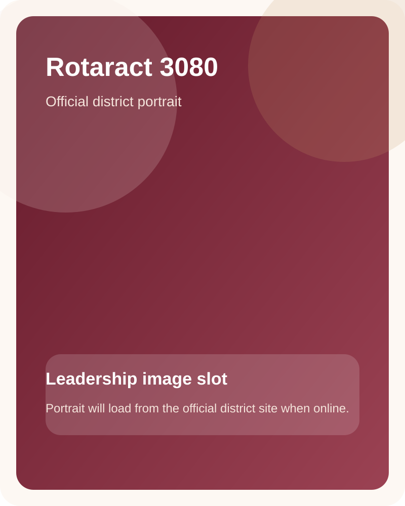

District Governor
The official council page includes governors, DRR leadership, zone representatives, and service directors. This page organizes those roles into a clear image-first grid with smaller portraits, so the leadership remains visible without oversized blanks.
The most important district roles appear with strong hierarchy and smaller portrait cards to preserve readability.

The earlier oversized image treatment created empty pockets. This layout keeps the portraits contained inside compact cards and lets the names breathe underneath them.
Presented with image slots above each name, this keeps the leadership wall consistent and compact.

Presented with image slots above each name, this keeps the leadership wall consistent and compact.
Presented with image slots above each name, this keeps the leadership wall consistent and compact.